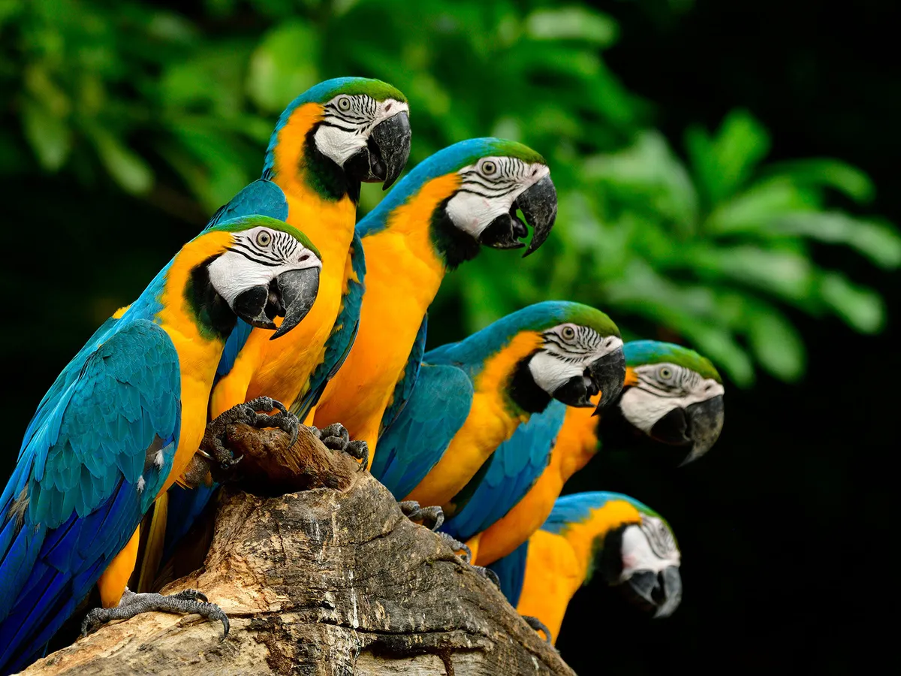

Herbivores
Deers
Camels

Giraffe
Elephant
Panda

Chimpanzee
Reptiles
Aligator
Yellow Anaconda
Madagascar tree boa
Chuckwala
Hidrossauro
Green tree python
Birds
Arara-amarela

Arara-verde
Arara-vermelha
Arara-jacinta

Group-of-parrots
Knysna turaco
Carnivore

Cheetah
The cheetah, scientifically known as Acinonyx jubatus, is a magnificent big cat renowned for its incredible speed. It is the fastest land animal, capable of reaching speeds up to 70 miles per hour (113 kilometers per hour) in short bursts.Lion
The lion is a majestic and powerful big cat known for its distinctive mane. It is often referred to as the "king of the jungle" due to its dominant presence in its natural habitat. Lions are highly social animals that live in prides and are skilled hunters.Jaguar
Jaguar is a luxury automotive brand known for its elegant and powerful vehicles. With a rich heritage spanning decades, Jaguar combines refined design, advanced technology, and exhilarating performance to create a truly captivating driving experience.
Lioness
The lioness is a female lion, known for her strength and hunting prowess. She plays a vital role in the pride, often leading the hunt and protecting her cubs. With her agility and teamwork, she embodies the essence of a fierce and nurturing predator.